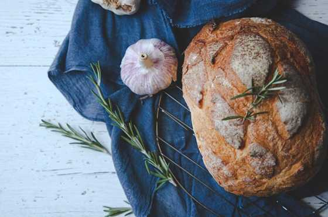
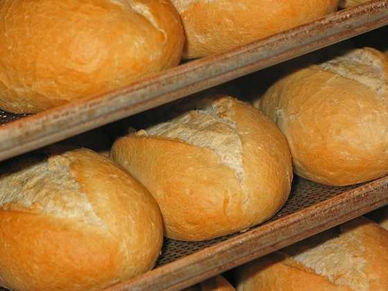
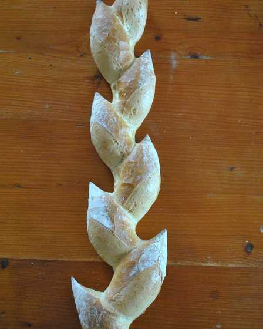
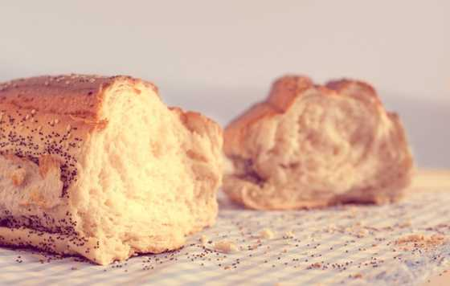
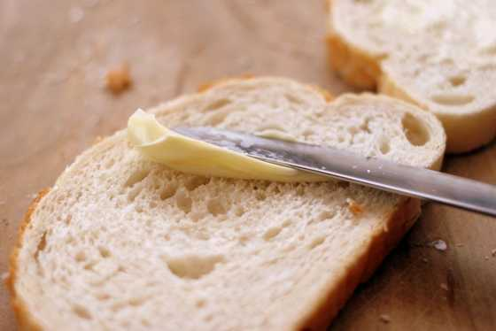
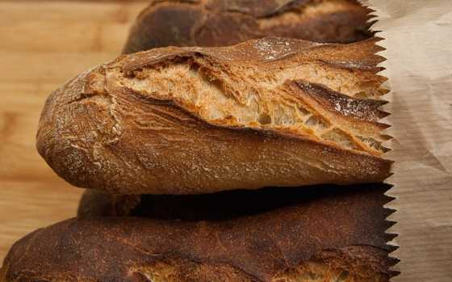
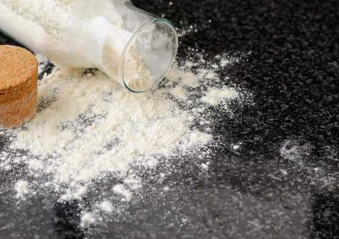

熊本県八代市・植柳下町
陽のパン
住宅街の小さな家に、やわらかな陽がさすように。熊本県産の小麦で、毎日ていねいに焼くパン屋です。
お店のこと
自宅を改装した、小さなパン屋
公式Instagramの紹介によると、陽のパンは住宅街にある自宅を改装して開いた小さなパン屋で、熊本県産の小麦粉を使ったパンを作っています。アカウント名の「2021」から、2021年ごろに始まったお店と考えられます。
- 熊本県八代市植柳下町の住宅街にあります
- 熊本県産の小麦粉を使ったパン
- 八代のご当地グルメ「ちくワンドッグ」の取扱店としても紹介されています
店名「陽」の由来や店主さんの想いは、確認できていません。「陽のひかりのようにあたたかい、毎日のパン」というコンセプトは制作側のイメージです。

メニュー
パンの種類・価格などの詳細は準備中です。写真はすべてイメージです。










営業時間・定休日・価格は準備中です。電話番号:準備中。
口コミ
イメージ例
小麦の香りがふわっとして、朝ごはんが楽しみになりました。
イメージ例
住宅街の小さなお店で、ほっとするあたたかさがあります。
イメージ例
焼きたてのパンをお土産にしたら、家族みんなが笑顔になりました。
上記は制作側が作成したイメージで、実在のお客様の声ではありません。
写真クレジット
- bread-rustic: Foodie Girl (StockSnap) / CC0 1.0
- croissants: Herry Wibisono (Pixabay) / CC0
- bread-loaves: Kerstin Riemer (Pixabay) / CC0
- bread-rolls-basket: Vishnu Chandra (WordPress Photos) / CC0 1.0
- baguette: Jberkel (Wikimedia Commons) / CC0
- walnut-raisin-bread: Nutrition, Food Safety & Health (Flickr) / CC0
- bread-poppyseed, bread-seeded, bread-butter: rawpixel / CC0 1.0
- bread-assortment: roland (Flickr) / CC0
- wheat-field-closeup: U.S. Department of Agriculture / CC0
- baguette-close, flour-close: 作者記録なし / CC0・パブリックドメイン